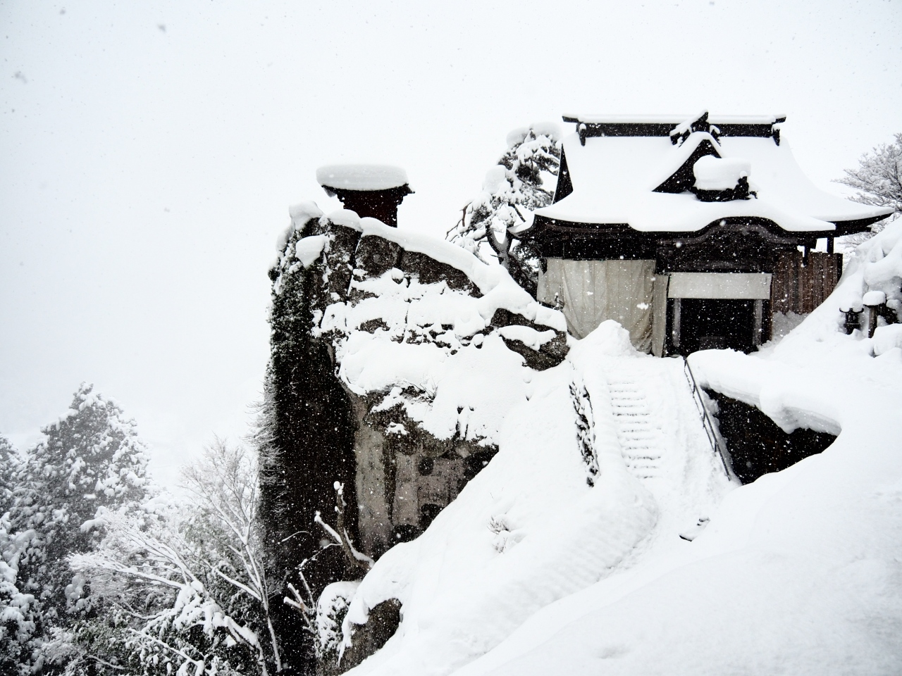
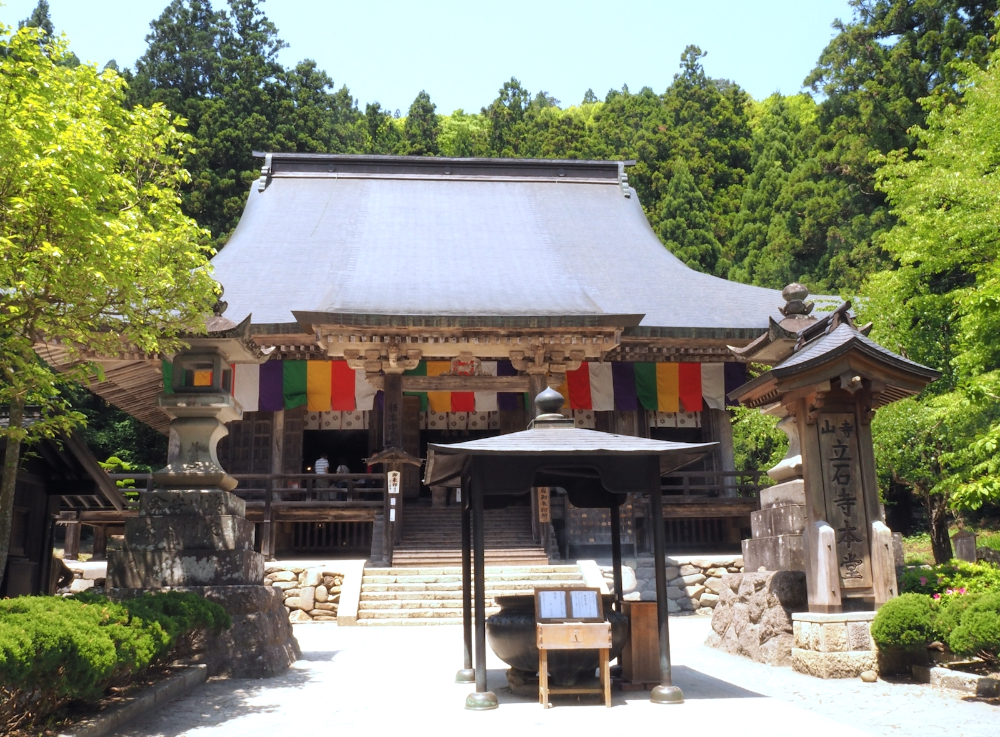
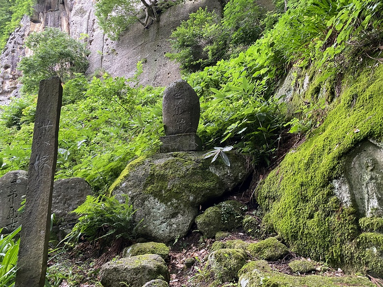
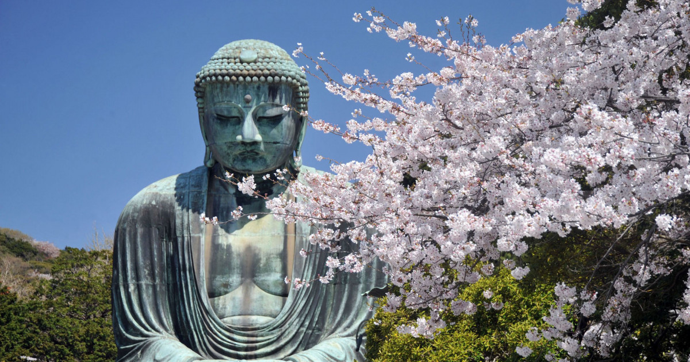
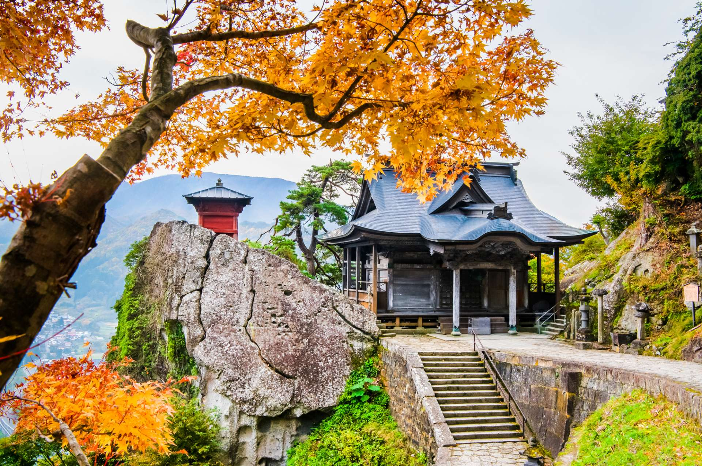
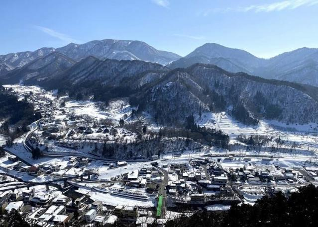

山寺
りゅうしゃくじ\Yamadera
山寺介紹
「寶珠山立石寺」（以下簡稱山寺）為西元860年，由慈覺大師円仁創建的天台宗寺廟，整座山都是修業與信仰的場地，自古以來流傳著只要到此參拜就能斬斷惡緣的傳說。延伸至山頂的參拜道路，共1,015階石階梯組成，坡度頗大，沿路上還能見到許多大大小小的佛堂與佛塔。 山寺立石寺是旅行日本東北山形必訪的景點之一，登上立石寺，據說需行走1015階的石階才能到達，山寺立石寺充滿靈性，四季皆有不同的景緻，這次滿分是雪季來訪，山寺四周白雪片片，從山寺景觀台眺望，那畫面更是令人震撼呀!當然~山寺也有古錐的御守和在地特產可以購買唷，旅行玩樂東北山形，山寺真的非常值得一訪呀! 在藏王也可以看到全日本罕見的「樹冰」，「樹冰」是空氣中的水滴在周邊樹木結冰形成的，聳立的巨大身影有「雪怪」之稱。此外，藏王也以優異的雪質，滑雪場周邊的溫泉與景點而知名。
山寺推建路線
根本中堂
 從登山口爬上數十個階梯，佛堂「根本中堂」隨即現身，堪稱日本最古老的櫸木建築物，同一排寶物殿的對面就是「芭蕉・曾良像」銅像。
SEMIZUKA（せみ塚）
 穿過鎌倉時代（1185年～1333年）建造的山門後，迎面而來的是陡斜的石階，從山門開始走約15分鐘，抵達SEMIZUKA（せみ塚）。這是在1751年弟子們將寫滿了芭蕉俳句的長條詩籤埋入石下，並立了記念石碑，芭蕉的弟子們在造訪山寺時，推測這裡應是『寂靜 蟬聲入岩石（閑さや 岩にしみ入る 蝉の声）』的原點。
奥院・大佛殿

從SEMIZUKA過來只要大約5分鐘，通過由山毛櫸打造的優美仁王門，就到了中性院，裡面有著傳說摸了能治百病的「賓頭盧（おびんずるさま）」。
離中性院不遠的「奥院・大佛殿（奥の院・大仏殿）」也是參拜道的終點，通稱「奧院（奥の院）」，不過如法堂才是真正的名稱，當年慈覺大師在中國修業時帶著走的釋迦如來像與多寶如來像，本尊就祀奉在此，如法堂的左側內部為「大佛殿（大仏殿）」，內有高達5公尺的黃金色的阿彌陀如像。
開山堂・納經堂
 參拜完畢奥院・大佛殿後，接著往重點「開山堂・納經堂（開山堂・納経堂）」與五大堂邁進吧～ 自奥院・大佛殿下石階不久會看到「金乘院（金乗院）」，往右手邊方向的路前進，就能看到「開山堂・納經堂」，開山堂祭祀了創建山寺的慈覺大師，以及收藏經文的納經堂，並列的2座佛堂是山寺的最佳景色。想要一次捕捉2座佛堂＋周邊美景的話，可以到離建築物稍遠的歩道上取景。
五大堂
 開山堂右側狹長階梯往上，前往五大堂，作為祈求天下泰平（世界在和平的狀態下保持安穩）修行道場所建造的佛堂。 從斷崖向外突出設置的舞台往外看，是一片美得令人窒息的壯麗風景，這裡是最推薦的山寺拍照地點。在佛堂裡見許多人將相機鏡頭轉向山寺的門前町與四周美麗的群山，眼前美景讓剛剛爬階梯的疲累瞬間一掃而空啦！
御朱印、水籤、御守
 在山寺參拜道上的佛堂與神社可以拿到總共8個御朱印（寺廟或神社的參拜證明），不過奥院的御朱印無法索取紙張，想要收集的人記得要將御朱印帳帶過去喔。
此外，根本中堂旁的日枝神社內有非常特別的「水籤（水みくじ）」，將籤紙浸至灑有花朵的桶子裡，文字就會慢慢浮現，還有對於健康與消災解厄靈驗的御守「大御守（大きいお守り）」超有人氣，御守正如其名，是罕見的大SIZE。
在山寺參拜道上的佛堂與神社可以拿到總共8個御朱印（寺廟或神社的參拜證明），不過奥院的御朱印無法索取紙張，想要收集的人記得要將御朱印帳帶過去喔。
此外，根本中堂旁的日枝神社內有非常特別的「水籤（水みくじ）」，將籤紙浸至灑有花朵的桶子裡，文字就會慢慢浮現，還有對於健康與消災解厄靈驗的御守「大御守（大きいお守り）」超有人氣，御守正如其名，是罕見的大SIZE。